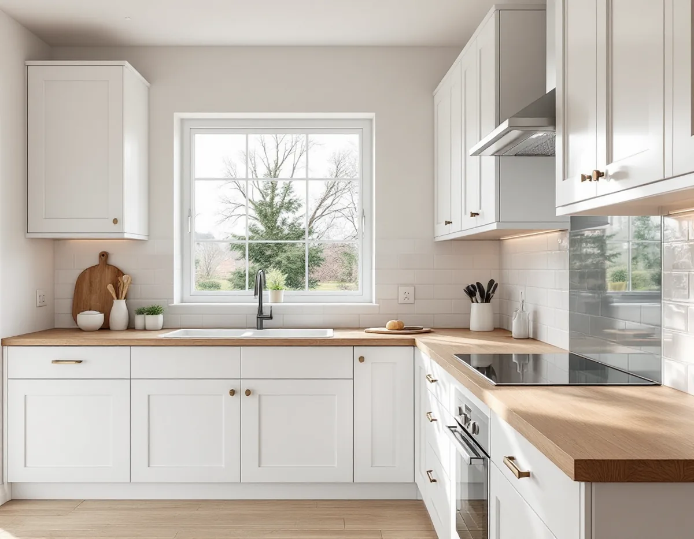
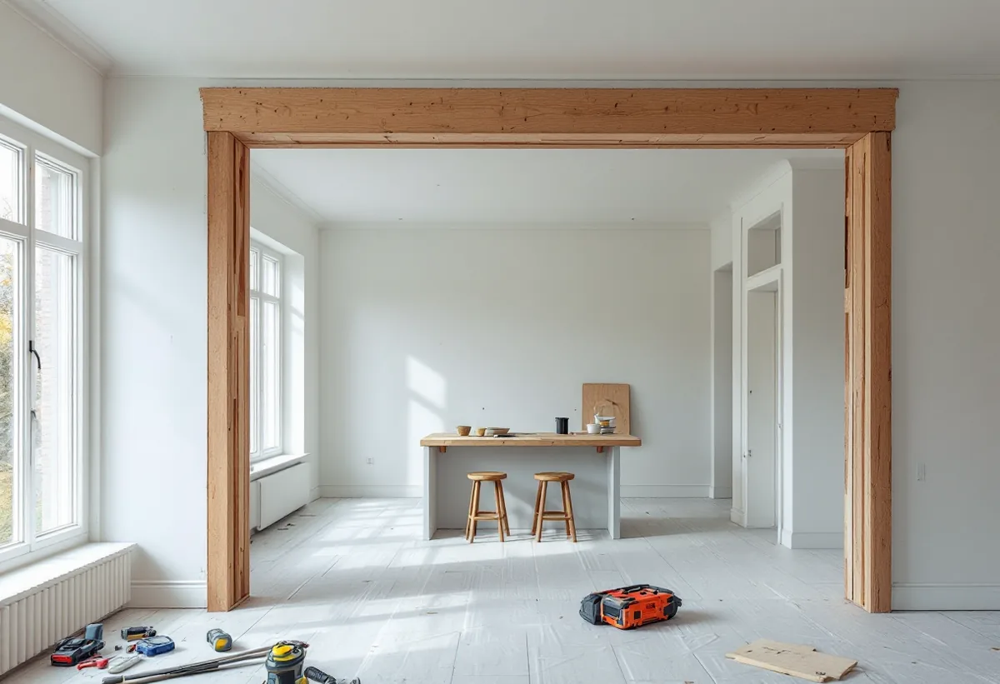
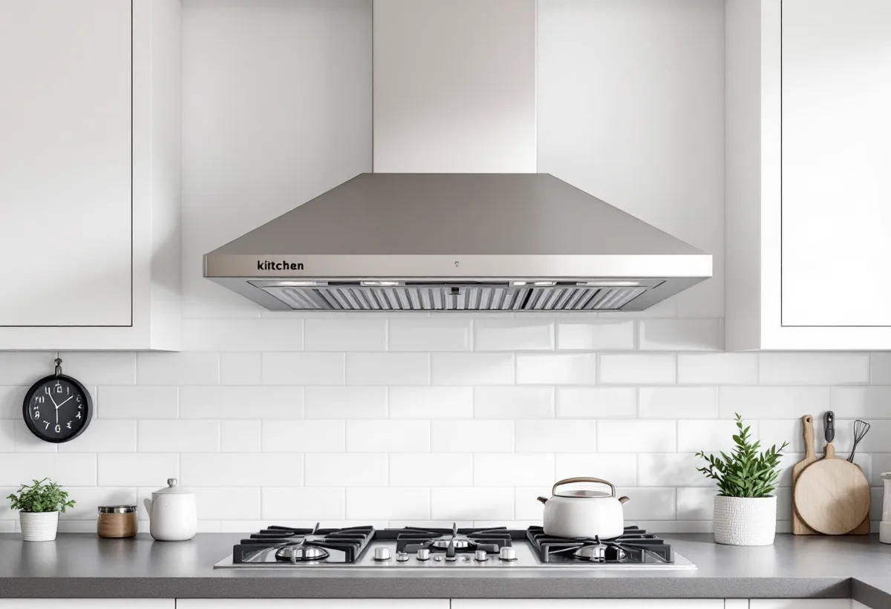

Platsbesök
Gratis besök där vi mäter och tittar på ventilationen.
I Hässelby villastad finns över 5 000 småhus, med villor från olika årtionden och grupper av radhus från 1960- och 70-talen. Köket i ett sådant hus har ofta byggts om flera gånger. Geal Entreprenad AB renoverar och flyttar kök i villor, radhus och lägenheter i Hässelby och tar hand om el, vatten och ventilation.

Stadens områdesfakta för 2025 räknar 7 029 bostäder i Hässelby villastad, varav 5 009 i småhus. 4 757 av småhusen ägs med äganderätt och 204 är bostadsrätter. I grannstadsdelarna ser det annorlunda ut: Hässelby gård har 324 småhus med äganderätt men över 5 000 lägenheter i flerbostadshus, och i Hässelby strand finns nästan bara lägenheter i flerbostadshus.
Stadens vägledning Varsam utveckling av småhus- och villaområden berättar att många villor i Hässelby villastad ersattes av täta grupper av enhetlig småhusbebyggelse på 1960- och 1970-talen. Genom att tomter successivt styckats av har villastäderna förtätats, och nya hus på tomter kring 600 kvadratmeter har kompletterat eller ersatt den äldre bebyggelsen. Köken i området är alltså från alla tider.

Stockholms stad skriver att du behöver göra en anmälan och invänta startbesked om flytten av ett kök innebär ändring av husets bärande konstruktion eller brandskydd, eller installation eller väsentlig ändring av ventilationen. Oavsett om anmälan krävs ska arbetet uppfylla de tekniska egenskapskraven i plan- och bygglagen.
I en villa där köket ska öppnas mot vardagsrummet är det ofta en vägg som ska bort. Är väggen bärande tar vi in en konstruktör och gör anmälan innan vi river. Staden råder också att man tidigt pratar med skorstensfejarmästaren om förutsättningarna för en ny eller ändrad imkanal.
Staden beskriver tre vanliga system. I äldre hus finns ofta självdrag, där använd luft sugs ut via skorstenskanalen i kök och badrum; på sommaren kan drageffekten utebli. Frånluftsventilation med centrala fläktar är enligt staden vanlig i hus byggda 1961–1975, och från 1976 och framåt är från- och tilluft, ofta med värmeåtervinning, vanligt.
Eftersom Hässelbys småhus är byggda under så olika perioder tar vi reda på vilket system ditt hus har innan köksfläkten väljs. Fläkten ska passa det system som finns, och ändras ventilationen väsentligt krävs anmälan.
Elsäkerhetsverket skriver att förändringar i den fasta elinstallationen, till exempel ett uttag i köket och elledningar i väggar, ska göras av ett registrerat elinstallationsföretag. Själv får du bara göra enklare saker, som att byta en befintlig strömbrytare på högst 16 ampere, och bara om du har kunskapen. Vi samordnar elinstallatören så att uttag för spis, ugn och diskmaskin hamnar rätt i ritningen.
Flyttas diskbänken drar vi nya vatten- och avloppsledningar och kontrollerar fallet till stammen. I ett radhus i en husgrupp kan ledningarna vara gemensamma, och då stämmer vi av med föreningen eller grannarna. Mer om tjänsten finns under köksrenovering, och för badrummet finns badrumsrenovering i Hässelby.

Gratis besök där vi mäter och tittar på ventilationen.
Planlösning, el och vatten i ett förslag.
Om väggar, brandskydd eller ventilation ändras.
Gamla skåp, ytskikt och installationer bort.
El, vatten, avlopp och imkanal.
Skåp, bänkskivor och vitvaror på plats.
I ett småhus räknar Skatteverket det som rotarbete att montera fast köksinredning och installera vitvaror i samband med omfattande byggarbete eller renovering, att riva väggar och bygga om planlösningen och att byta köksluckor. Huset ska vara äldre än fem år.
Avdraget är högst 30 procent av arbetskostnaden och högst 50 000 kronor per person och år. Material, skåp och vitvaror ger inget avdrag, och Geal drar avdraget direkt på fakturan.
Storleken på köket, om det flyttas eller öppnas mot ett annat rum, nya el-, vatten- och avloppsdragningar, ventilationen, skåp, bänkskivor och vitvaror. Efter ett gratis platsbesök får du ett skriftligt kostnadsförslag.
Planering, el, VVS, fläkt och väggar.
Köksrenovering i Stockholm →Takbyte, takbesiktning och plåtarbeten.
Takläggare i Hässelby →Villastaden, Hässelby strand och gård.
Takrenovering i Hässelby →Styckade tomter, gränser och kartan.
Attefallshus i Hässelby →Källarbadrum, backventil och bostadsrätt.
Badrumsrenovering i Hässelby →Riva, bygga nytt och delad tomt.
Byggföretag i Hässelby →Villastaden och radhusen.
Fasadmålning i Hässelby →Villastad, sommarstugor och grupphus.
Fasadrenovering i Hässelby →Villor, radhus och grupphus.
Fönsterbyte i Hässelby →Radhusen i Hässelby gård.
Fönsterrenovering i Hässelby →Slipa trägolvet – eller lägga nytt.
Golvläggare i Hässelby →Golvet under mattan.
Golvslipning i Hässelby →Villastad, grupphus och radhus i Hässelby.
Målare i Hässelby →Plåttak efter eternit, rännor och beslag i Hässelby.
Plåtslagare i Hässelby →Altan, bod och plank i villastaden och radhusen.
Snickare i Hässelby →Eternit och asbest på taket.
Takbyte i Hässelby →Ny tapet i grupphus och villor.
Tapetsering i Hässelby →Hus som vuxit i omgångar.
Tillbyggnad i Hässelby →Grupphusen, eterniten och ventilationen.
Totalrenovering i Hässelby →